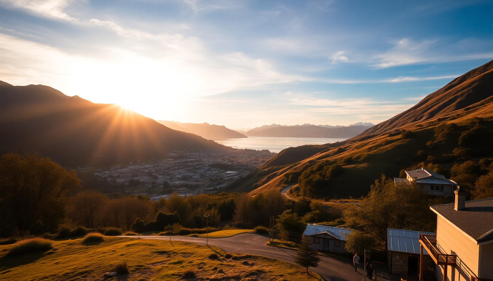

Best Time to Visit New Zealand: Month-by-Month Guide for 2025

I’ve been to New Zealand in every season—sometimes by choice, sometimes because I booked a flight before checking the weather. This guide skips the generic “spring is lovely” nonsense. Instead, I’ll tell you exactly what to expect in each city month by month, so you can decide when to go for hiking, skiing, or just avoiding the worst of the tourist rush.
When is the best overall time to visit New Zealand?
For most travelers, February and March are the sweet spot. The summer crowds have thinned out after the Christmas-New Year peak, but the weather in Auckland and Queenstown stays warm and settled. I’ve had perfect hiking days on the Tongariro Alpine Crossing in early March with zero wind and 25°C temps.
- February: Best beach weather in Auckland (Mission Bay, Piha) and stable skies for Queenstown bungee jumping.
- March: Lower accommodation prices in Wellington and Christchurch; still warm enough for the Abel Tasman kayak trips.
- Avoid December 20–January 10 unless you love shoulder-to-shoulder crowds and 3x hotel rates.
What is New Zealand like in summer (December–February)?
Summer runs from December to February, but the quality varies wildly by city. Auckland gets humid and sticky—I’ve sweated through my shirt just walking Queen Street at 10 a.m. Queenstown is hot but dry, perfect for jetboating on the Shotover River. Christchurch is milder, with long daylight until 9:30 p.m.
In Auckland, I’d skip the city beaches (too many people) and take the ferry to Waiheke Island for wine tasting at Mudbrick Vineyard. In Queenstown, book a Milford Sound cruise early in the morning to dodge the bus crowds. Christchurch feels empty during summer weekends—locals head to the Banks Peninsula.
- Pros: Best weather for outdoor activities, long days, festivals like the Auckland Lantern Festival.
- Cons: Peak prices, booked-out rental cars (I waited two hours at Avis in Christchurch once), and mosquitoes near lakes.
Should I visit in autumn (March–May)?
Yes. Autumn is my favorite season in New Zealand. The crowds vanish after Easter, the light turns golden, and the weather stays reliable in the South Island. I spent a week in Queenstown in April and had the Remarkables trail almost to myself.
Queenstown in April is spectacular for the autumn colors around Lake Wakatipu. Christchurch is crisp and clear—perfect for cycling the Avon River path. Wellington can get windy (surprise), but the Te Papa museum is a great indoor backup.
- March: Still swimming weather in Auckland’s Piha Beach.
- April: Best month for hiking the Routeburn Track (book huts early).
- May: Snow starts on the Southern Alps; good time to grab cheap flights to Christchurch.
What about winter (June–August)? Is it worth it?
If you ski or snowboard, absolutely. If you don’t, winter in New Zealand is a mixed bag. Queenstown turns into a ski town—packed with Australians, expensive accommodation, and lift queues at The Remarkables and Coronet Peak. Auckland and Wellington get gray and drizzly; I’ve had four straight days of rain in Wellington in July.
Queenstown is the winter hub. Stay at the Sherwood in Glenorchy for a quieter base, or book a room at the St Moritz Hotel on the lakefront if you want walkable access to the ski shuttles. Christchurch is cold but sunny—I’ve had clear -2°C mornings there while Auckland was 10°C and raining.
- June: Good for skiing at Coronet Peak (early season, fewer people).
- July: Peak snow depth; roads to Mount Cook can be icy.
- August: Cheaper flights to Auckland, but the city is dull. Skip the Sky Tower—it’s overpriced and the view is the same as any tall building.
Is spring (September–November) too unpredictable?
Spring is the most unpredictable season, but also the cheapest. I’ve had snow in Queenstown in October and 22°C in Christchurch in September. The upside: empty trails, low prices, and newborn lambs everywhere.
Wellington in spring is a gamble—wind gusts over 100 km/h are common. I’d stick to indoor stuff like the Wellington Cable Car and the Zealandia wildlife sanctuary. Auckland is pleasant by November, with the Parnell Farmers Market in full swing. Christchurch shines in October when the cherry blossoms bloom along the Avon River.
- September: Queenstown is dead quiet. You can get a lake-view room at the Sofitel for half the summer price.
- October: Best for seeing the lupins in Lake Tekapo (but they peak in November).
- November: Good for hiking the Tongariro Alpine Crossing before summer crowds hit.
How do the four cities compare month by month?
| Month | Auckland | Queenstown | Wellington | Christchurch | |-------|----------|------------|------------|--------------| | Jan | Hot, humid, busy | Peak summer, packed | Mild, windy | Warm, quiet | | Feb | Best beach month | Great weather, fewer people | Good for Weta Workshop tours | Sunny, pleasant | | Mar | Still warm, less crowded | Autumn colors start | Windy but mild | Harvest season | | Apr | Cooling down | Peak autumn | Rainy | Crisp, clear | | May | Rainy | Snow possible | Gray | Cold but sunny | | Jun | Gray | Ski season starts | Wet | Cold | | Jul | Drizzly | Peak ski, expensive | Windy, rainy | Cold, sunny | | Aug | Same as July | Ski continues | Still windy | Snow possible | | Sep | Warming up | Quiet, cheap | Unpredictable | Cherry blossoms | | Oct | Pleasant | Shoulder season | Very windy | Blooming | | Nov | Nice | Getting busy | Improving | Warm | | Dec | Pre-Christmas rush | Hot, busy | Festive | Bustling |
FAQ
When is the cheapest time to fly to New Zealand? Late May through early September, excluding school holidays. I’ve seen Auckland flights from Los Angeles for under $600 round-trip in June. Queenstown is always pricier to fly into—fly into Christchurch instead and drive (4 hours) or take a cheap domestic hop.
Is Queenstown worth visiting in winter if I don’t ski? Yes, but only for 3–4 days. The town itself is small and the main draw is the mountains. You can do the Milford Sound cruise (it’s stunning even in snow), visit the Onsen hot pools, or take the gondola up Bob’s Peak. But if you want nightlife or beach weather, skip it and go to Auckland.
Which city has the best weather year-round? Christchurch. It’s sunnier and less humid than Auckland, less windy than Wellington, and not as tourist-crowded as Queenstown. Summers are warm without being oppressive, and winters are cold but clear. I’d live there if I could handle the earthquakes.
Conclusion
- February–March is the all-around best time for good weather and manageable crowds.
- April–May offers autumn colors and empty trails, especially in Queenstown and Christchurch.
- June–August is for skiers only—everyone else should wait.
- September–November gives you the lowest prices and spring blooms, but pack for four seasons in one day.
- Book accommodation in Queenstown for winter at least three months ahead—the St Moritz and Sherwood fill up fast.